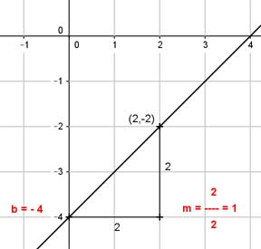

Lineare Funktionen Aufgabe 26 Ermitteln Sie die Gleichung der Geraden, wenn gegeben ist: P(2|-2); b = -4 Gesucht ist eine Funktionsgleichung der Form y = mx + b mit der Steigung m und dem Abschnitt b auf der y-Achse. -2 = 2 * m - 4 |+4 2 = 2m |:2 m = 1 y = x - 4 